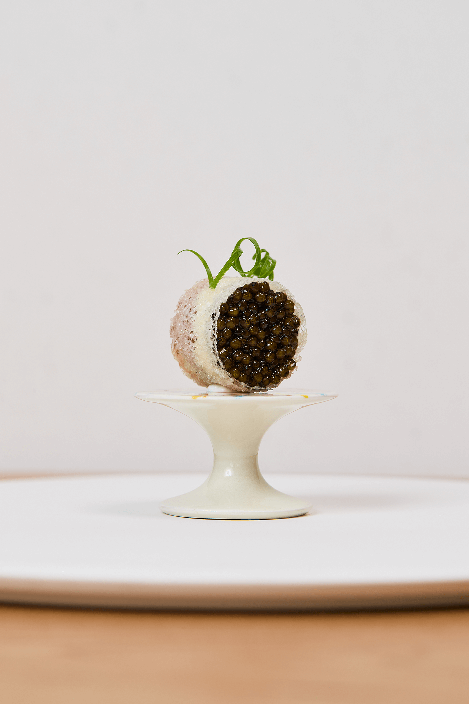
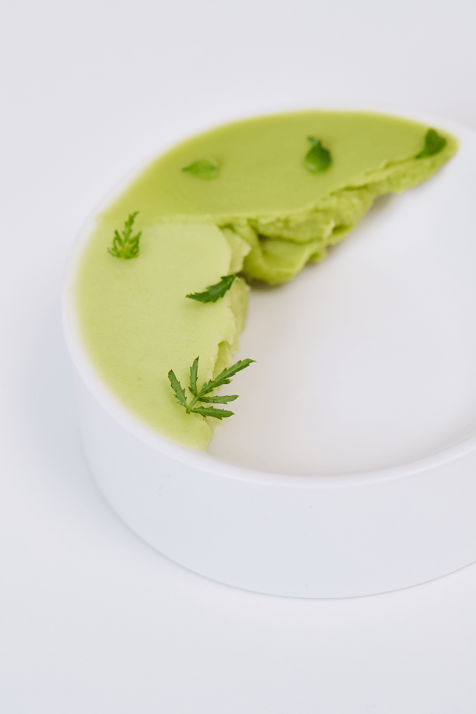
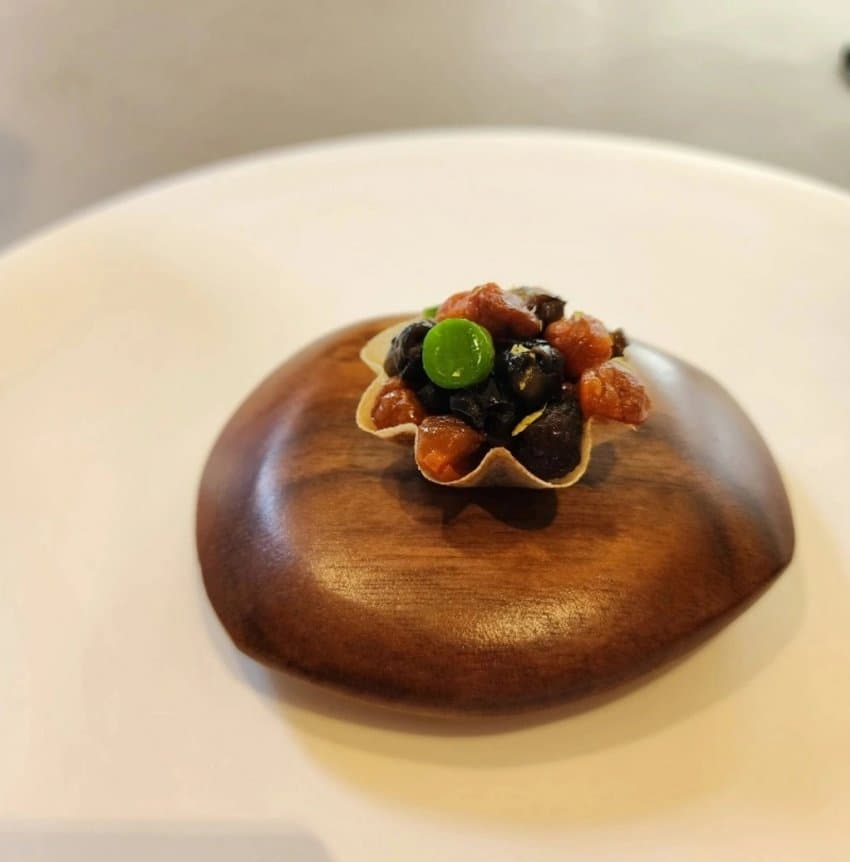
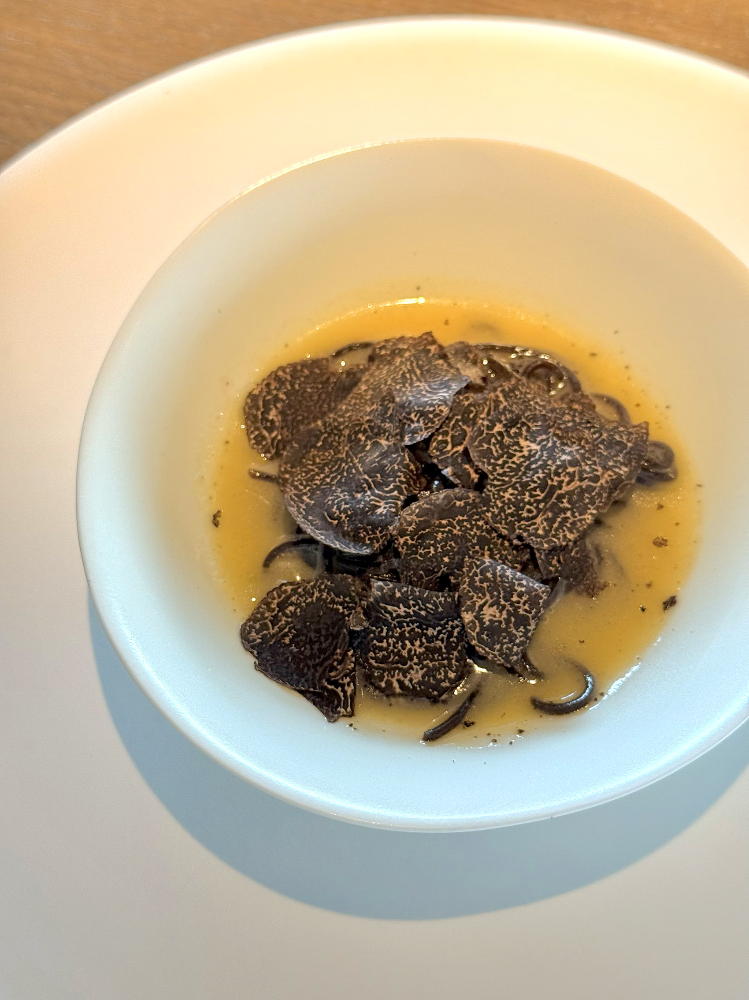

쵸이닷
모수
비아 톨레도 파스타바
610 Magnolia
코스 요리

캐비어 롤
깊은 풍미를 섬세하게 말아낸 캐비어 롤.

방아잎 소르베
고수와 민트의 향을
모두 느낄 수 있는 디저트.
가든 샐러드
나뭇잎 모양을 형상화한 상큼한 샐러드.

채소 타르트
매우 중요한 마늘,
떡을 먹는 듯한 느낌을 내는 애피타이저.

잉걸불에 태운 도토리 국수
도토리를 참나무 숯에 태워 만든 국수.
예약